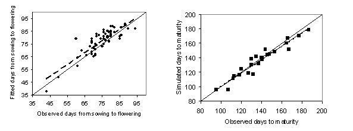
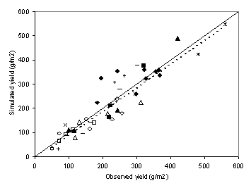

Introduction
The fababean module was developed by Michael Robertson and Jill Turpin, with contributions from Bill Bellotti, Ian Rose, Andrew Moore, and KM Siddique. The module is described in the paper by Turpin et al. (2003). The reader is referred to the science document for the plant module for a comprehensive description of the processes simulated by APSIM-Fababean.
This document outlines some fababean-specific issues that are not covered by the plant science document.
Goto generic Plant model documentation
Notable features of APSIM-FABABEAN
The Module simulates small-seeded types of cultivars
The phenology of fababean cultivars is responsive to temperature and photoperiod, but not vernalisation. There is an effect of photoperiod on post-flowering development.
Model performance on days to flowering was reported by Turpin et al. (2003) and is repeated in the graph below (Figure 1).
The module does not simulate production from second and further flushes of flowers and pods.
Under well-watered conditions, fababean may have a low harvest index due to continued vegetative growth at the expense of reproductive yield. The model does not currently simulate this phenomenon.
APSIM-Fababean is not phosphorus-responsive, this is currently under development.
Crop growth is not sensitive to waterlogging.
Cultivars and crop classes
There is one crop class. There are 6 cultivars able to be simulated: Amethyst, CPI56288, Dooen, Tyson, CV244-1, CPI56566. Cultivars differ in terms of biomass partitioning to grain and phenology. If usrs wish to use more modern cultivars they should contact Jeremy Whish at APSRU for advice.

Figure 1: Observed and simulated days from sowing to flowering and days to maturity for fababean.

Figure 2: Performance of the fababean module (observed versus simulated grain yield in g/m2) against test datasets reported by Turpin et al. (2003).
Validation
APSIM-Fababean has received testing across the Australian wheat belt, with factors such as cultivars, sowing date, irrigation, soil type, row spacing varying. Some testing has occurred in WA as well as Victoria, Queensland and northern NSW. The accompanying figure 2 demonstrates the performance of the module against Australian datasets.
In which environments should this model be used?
APSIM-Fababean can be used with most confidence in the semi-arid sub-tropics of northern Australia, the Western Australian wheat belt, and the dryland environments of the Merranean-type regions. The module has received limited testing under irrigation on black cracking clay soils of northern NSW.
References
Turpin JE, Robertson MJ, Haire C, Bellotti WD, Moore AD, Rose I (2003) Simulating fababean development, growth, and yield in Australia. Australian Journal of Agricultural Research 54, 39-52.
Robertson, M.J., Carberry, P.S., Huth, N.I., Turpin, J.E., Probert, M.E., Poulton, P.L., Bell, M., Wright, G.C., Yeates, S.J., and Brinsmead, R.B. 2002. Simulation of growth and development of diverse legume species in APSIM, Australian Journal of Agricultural Research 53:429-446.